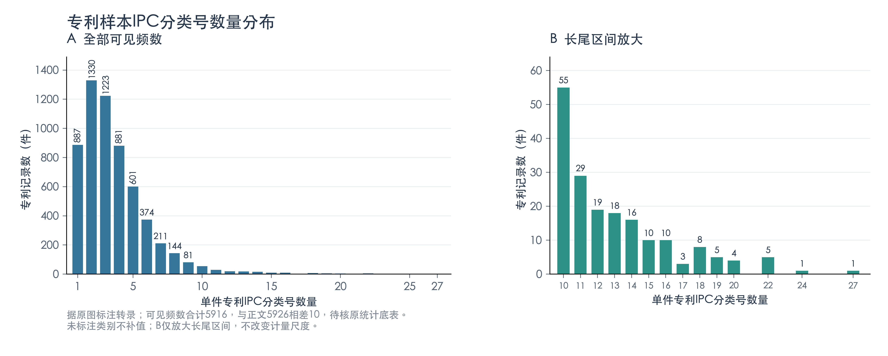
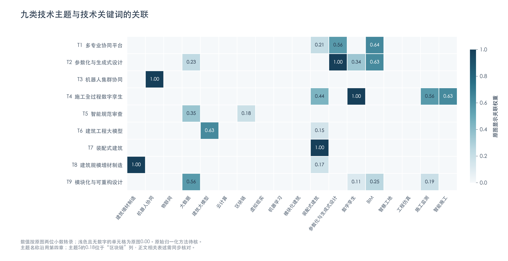
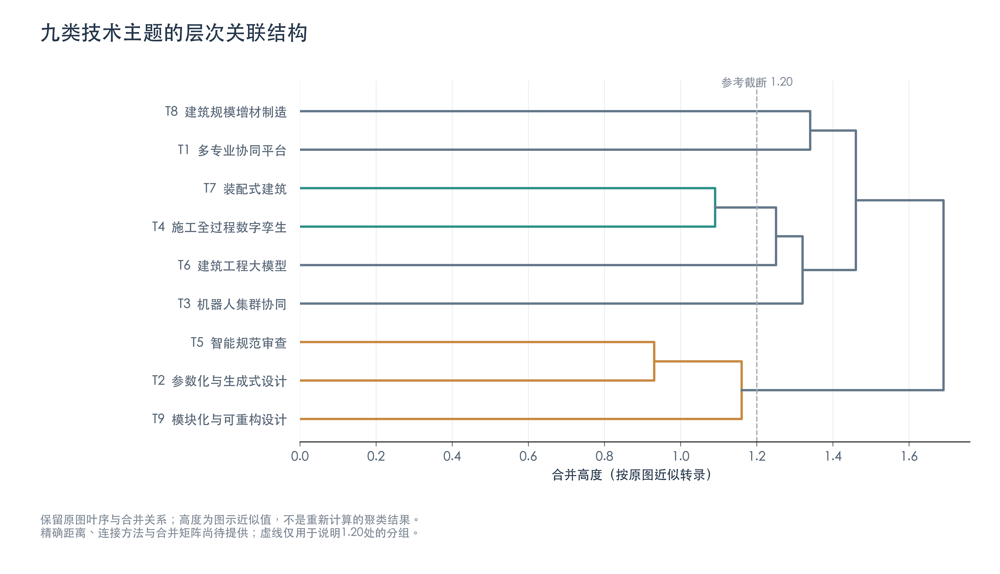
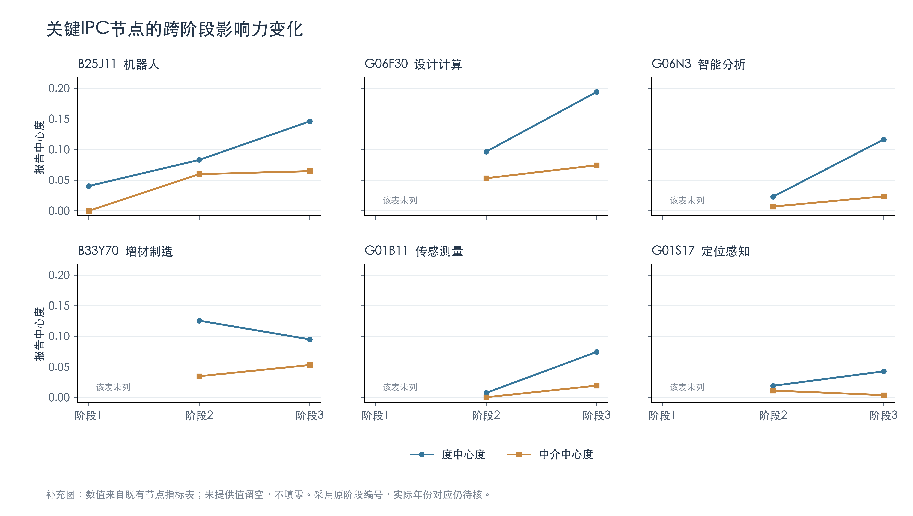
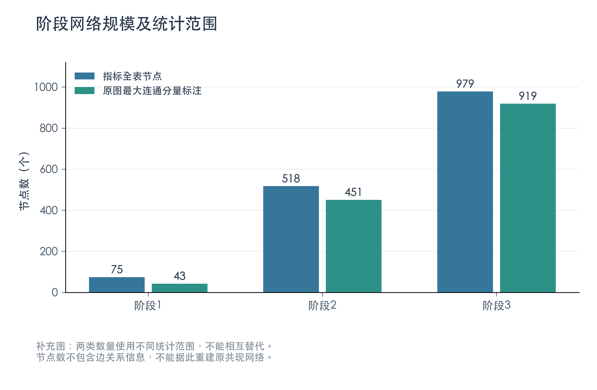
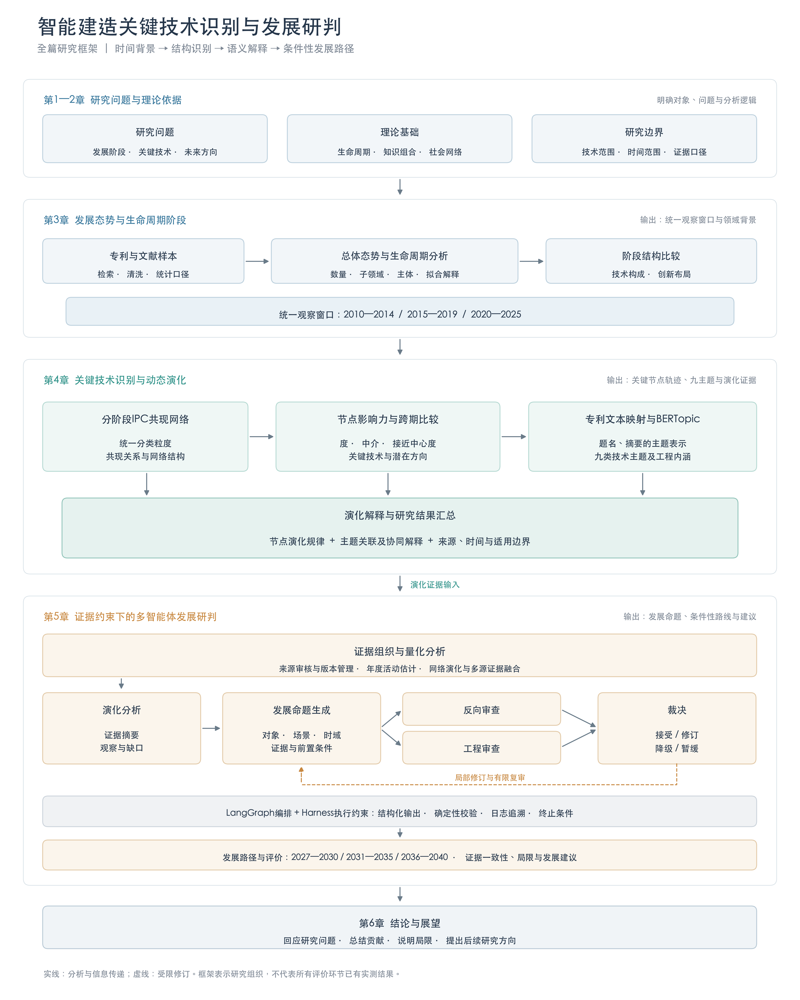
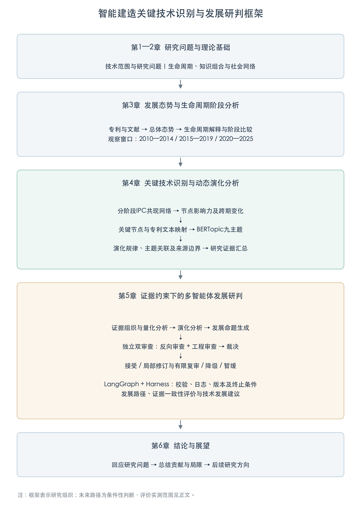

科研图件预览
三张网络原图尚待边表重绘；聚类图为近似转录。详细边界见图件说明。
fig4_1_IPC分类号分布
SVG · PDF · PNG

fig4_5_主题关键词热力图
SVG · PDF · PNG

fig4_6_主题层次聚类_近似重绘
SVG · PDF · PNG

supp_关键IPC节点演化轨迹
SVG · PDF · PNG

supp_阶段网络规模比较
SVG · PDF · PNG

fig1_全篇研究框架流程图
SVG · PDF · PNG

fig1_全篇研究框架_正文精简版
SVG · PDF · PNG
